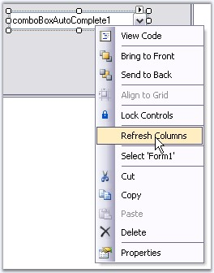
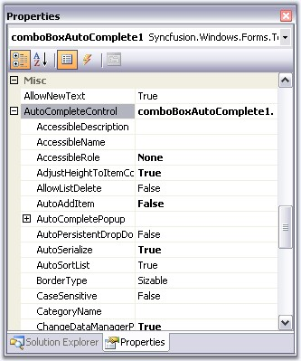
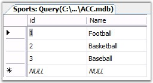
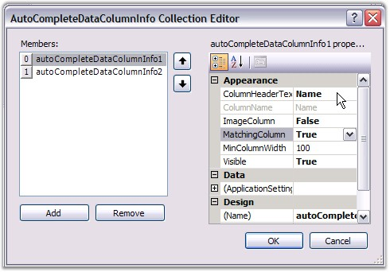
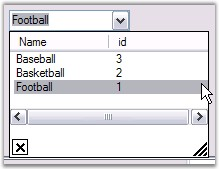

This section contains information about using the ComboBoxAutoComplete control in some commonly used scenarios.
The behavior settings of a ComboBoxAutoComplete control includes the below properties.
|
ComboAutoComplete Properties |
Description |
|
AllowNewText |
Specifies whether the user is allowed to enter new text. User can be allowed to enter new text in the ComboAutoComplete by setting AllowNewText to true. AllowNewText is mainly used to prevent items that are not in the list while validating. |
|
ReadOnly |
Gets or Sets value indicating whether changes can be done to the combobox. |
|
UpdateComboSelectionProperties |
UpdateComboSelectionProperties set to true means the Property SelectedItem will return the AutoCompleteControl's SelectedItem. Else if it is set to false, then SelectedItem property should return the base class SelectedItem ie., the Windows ComboBox SelectedItem value. |
|
[C#]
this.comboBoxAutoComplete1.AllowNewText= true; this.comboBoxAutoComplete1.ReadOnly = true; this.comboBoxAutoComplete1.UpdateComboSelectionProperties = false; |
|
[VB.NET]
Me.comboBoxAutoComplete1.AllowNewText= True Me.comboBoxAutoComplete1.ReadOnly = True Me.comboBoxAutoComplete1.UpdateComboSelectionProperties = False |
Refreshing the Columns
When the datasource of the AutoComplete control is set to a valid datasource through the designer, the "Refresh Columns" verb can be clicked to automatically populate the Columns collection. This option is available in the context menu of the ComboBoxAutoComplete control and also as property grid command.

Figure 136: Refreshing Column using Control's Context Menu
Banner Text Support
We can set banner text for the ComboBoxAutoComplete control. Refer BannerTextProvider Component topic for more details.
Figure 137: Banner Text set for ComboBoxAutoComplete
We can use multiples columns in the ComboBoxAutoComplete control. In this case, we need to specify which column is to be used as the matching column using the ComboBoxAutoComplete.AutoCompleteControl.Columns properties. Adding multiple columns is discussed Multiple Columns topic in AutoCompleteControl UG.

Figure 138: AutoCompleteControl Properties Accessed Through ComboBoxAutoComplete Property Grid
See Also
The following steps sets a DataView as the DataSource of ComboBoxAutoComplete.
1. Drag and drop SqlDataAdapter or OleDbDataAdapter tool from the Data tab of the Toolbox onto the form. This will appear in component tray under the form. The Data Adapter Configuration Wizard will be automatically launched to assist you.
2. SqlConnection object and associated Command objects will be created to support the Data Adapter.
3. Select the DataAdapter you created and click the "Generate DataSet" option at the bottom of the properties window.
4. This will enable you to create a DataSet object, which will contain the DataTable/DataView which, wraps the record set you configured in the Wizard.
5. Create a name for your DataSet object and select the table(s) to include.
6. Enter the following code in the Load event of your form to fill the DataSet with data from the database.

Figure 139: External DataSource Table
|
[C#]
// Fills the DataSet with data from the database. this.oleDbDataAdapter1.Fill(this.dataSet11); |
|
[VB.NET]
' Fills the DataSet with data from the database. Me.oleDbDataAdapter1.Fill(Me.dataSet11); |
Adding Columns to the Popup and setting the matching column
Add columns through designer using ComboBoxAutoComplete.AutoCompleteControl.Columns property. Set the first column as the matching column.

Figure 140: Adding Columns "Name" and "ID" According to External Data Source
Using the below code, assign the dataset as the data source for the ComboBoxAutoComplete control.
|
[C#]
// Assign DataSet to the AutoCompleteControl.DataSource property of the ComboBoxAutoComplete. this.comboBoxAutoComplete1.AutoCompleteControl.DataSource = this.dataSet11.Sports; this.comboBoxAutoComplete1.DisplayMember = "Name";
// Sets the attributes of columns in the drop down list of the AutoComplete. this.comboBoxAutoComplete1.AutoCompleteControl.Columns.Add(this.autoCompleteDataColumnInfo1); this.comboBoxAutoComplete1.AutoCompleteControl.Columns.Add(this.autoCompleteDataColumnInfo2);
this.autoCompleteDataColumnInfo1.ColumnHeaderText = "Name"; this.autoCompleteDataColumnInfo1.MatchingColumn = true; this.autoCompleteDataColumnInfo2.ColumnHeaderText = "ID"; |
|
[VB.NET]
' Assign DataSet to the AutoCompleteControl.DataSource property of the ComboBoxAutoComplete. Me.comboBoxAutoComplete1.AutoCompleteControl.DataSource = Me.dataSet11.Sports Me.comboBoxAutoComplete1.DisplayMember = "Name"
' Sets the attributes of columns in the drop down list of the AutoComplete. Me.comboBoxAutoComplete1.AutoCompleteControl.Columns.Add(Me.autoCompleteDataColumnInfo1) Me.comboBoxAutoComplete1.AutoCompleteControl.Columns.Add(Me.autoCompleteDataColumnInfo2)
Me.autoCompleteDataColumnInfo1.ColumnHeaderText = "Name" Me.autoCompleteDataColumnInfo1.MatchingColumn = True Me.autoCompleteDataColumnInfo2.ColumnHeaderText = "ID" |

Figure 141: ComboBoxAutoComplete with Sports Data
Visual Styles for the ComboBoxAutoComplete control can be set using VisualStyle property. The styles are,
· Default and
· Office2007.
|
[C#]
this.comboBoxAutoComplete1.VisualStyle = Syncfusion.Windows.Forms.Tools.ThemedComboBoxStyles.Office2007; this.comboBoxAutoComplete1.Office2007ColorTheme = Syncfusion.Windows.Forms.Office2007Theme.Managed; |
|
[VB.NET]
Me.comboBoxAutoComplete1.VisualStyle = Syncfusion.Windows.Forms.Tools.ThemedComboBoxStyles.Office2007 Me.comboBoxAutoComplete1.Office2007ColorTheme = Syncfusion.Windows.Forms.Office2007Theme.Managed |
Figure 142: Visual Styles for ComboBoxAutoComplete Control
 Note: The control supports all the three
office color schemes.
Note: The control supports all the three
office color schemes.
Custom Colors
We can also apply custom colors to the ComboBoxAutoComplete control by setting Office2007ColorTheme to "Managed" and specifying the custom color through the ApplyManagedColors method as follows.
|
[C#]
this.comboBoxAutoComplete1.Office2007ColorTheme = Syncfusion.Windows.Forms.Office2007Theme.Managed; Office2007Colors.ApplyManagedColors(this, Color.LightGreen); |
|
[VB.NET]
Me.comboBoxAutoComplete1.Office2007ColorTheme = Syncfusion.Windows.Forms.Office2007Theme.Managed Office2007Colors.ApplyManagedColors(this, Color.LightGreen) |
Figure 143: CustomColor= "Orchid"